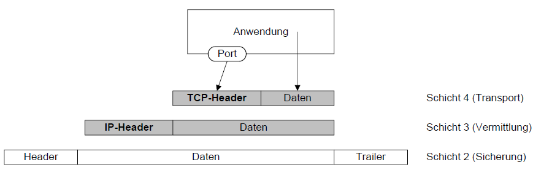
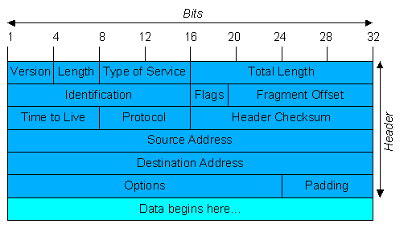
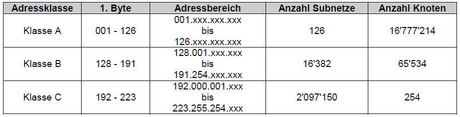
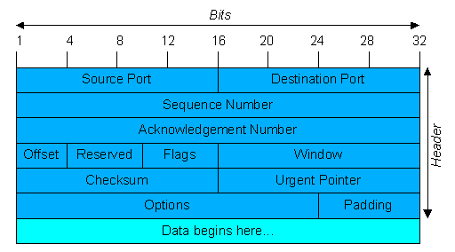
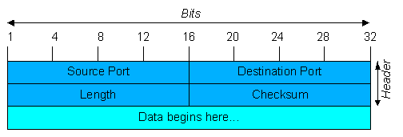

NS - Netzwerkservice
ISO/OSI Modell
Protokolle
Befehle cmd
Handout
ISO/OSI Modell

Header
Mit dem Header werden zusätzliche Daten zur Steuerung und Kontrolle der Verbindung angefügt.
Je grösser der Header ist, desto mehr Bytes müssen übertragen werden, dann spricht man
von einem overhead.
Die TCP Schicht und die IP Schicht stellen einen Header (Protokollkopf) voran.

Ports
Die Anwendungen setzen direkt auf TCP und UDP auf. Die Endpunkte werden als Ports bezeichnet.
Sie dienen als Schnittstelle resp. Adresse zu den Anwendungen. Die TCP und UDP verwenden eine eigene
Port-Nummerierung. Die Nummern lassen sich in drei Bereiche aufteilen.
| 0 | - | 255 | Standarddienste, well known services |
| 256 | - | 1023 | Betriebssystemspezifische Dienste |
| 1024 | - | 65535 | freier Bereich für den Anwender |
Hier sind einige Beispiele fü Portnummern:
| Dienst | Port | Protokoll |
|---|---|---|
| frp | 21 | TCP |
| telnet | 23 | TCP |
| smtp | 25 | TCP |
| http | 80 | TCP |
| rlogin | 531 | TCP |
| rpc | 111 | UDP |
Protokolle

IP (Internet Protokoll)
Funktionen und Eigenschaften
- Definition von Datengrammen (Pakete) als kleinstes Übertragungseinheit
- Definition des Adressierungsschemas (IP-Adresse)
- Übermittlung der Daten von der Transportebene zur Netzwerkschicht
- Routing von Datengrammen durch das Netz
- Fragmentierung und Zusammensetzung von Datengrammen
IP-Header
| Version | Versionsnummer. Damit werden unterschiedliche Versionen auf dem glei- chen Netz ermöglicht. |
|---|---|
| Length | Länge des Headers |
| Type of Service | Spezifikation der verschiedenen Dienstvarianten. |
| Total Lenght | Paketlänge, Header und Daten. |
| Identification | Zuordnung eines Fragments zu einem bestimmten Datagramm. |
| Flags | DF: Dont's Fragment, MF: More Fragments |
| Fragment Offset | Gibt die Position eines Fragmentes im Datagramm an. |
| Time of Live | Zähler zur Begrenzung der Lebensdauer. Wird von jedem Netzknoten dekrementiert. Sobald der Zähler Null ist, wird das Paket verworfen und der Absender benachrichtigt. Damit wird verhindert, dass Pakete endlos im Netz umherwandern. |
| Protocol | Transportprotokollnummer, an welches das Paket weitergeleitet werden muss. Diese Nummern sind einheitlich (TCP: 6, UDP: 17). |
| Header Checksum | Prüfsumme des Headers. Die Nutzdaten des IP-Datagramms werden aus Effizienzgründen nicht geprüft! (Aufgabe das Transportprotokolls). |
| Source Address | IP-Adresse des Senders. |
| Destination Address | IP-Adresse des Empfänger. |
| Options/Padding | Mögliche Erweiterung der Funktionalität. |
IP-Adressen
Die Aktuelle Version von IP ist die Version 4, also IPv4. Die Adressen werden unabhängig
von der Rechnerhardware einem bestimmten host zugeordnet, dabei werden 32-Bit Adressen verwendet.
Diese werden mit Hilfe der Subnetzmaske in den host und network aufgeteilt.

Wenn alle Host-Bytes den Wert 255 haben, dann handelt es sich um eine Broadcast-Adresse. Dies wird benötigt um die Hosts in dem Netzwerk zu adressieren.
Die folgenden Adressbereiche sind für die Nutzung in privaten Netzen reserviert:
| Klasse A: | 10.0.0.0 | bis | 10.255.255.254 |
| Klasse B: | 172.16.0.0 | bis | 172.31.255.254 |
| Klasse C: | 192.168.0.0 | bis | 192.168.255.254 |
Die Adress 0.0.0.0 wir als Lokalhost bezeichnet.
127 steht für den Loopback Device eines Rechners. Sendet man ein Pakt an eine Adresse der Form 127.xxx.xxx.xxx, so werden sie nicht auf eine Leitung ausgegeben, sondern sie werden lokal verarbei- tet. Dies wird oft zur Fehlerbehebung genutzt.
Verknappung der IP-Adressen
In den Klassen A, B und C werden eine grosse Anzahl Adressen verschwendet. Dieser Verknappung
versucht man durch verschiedene Massnahmen wie Bildung von Subnetzen innerhalb der Klasse, DHCP oder
NAT entgegenzuwirken. Trotz allen Massnahmen wird eine Ablösung der IP-Protokollver- sion von
IPv4 auf IPv6 irgendwann anstehen. Die wesentlichen Modifikationen von IPv6 ist die erwei- terte
Adressgrösse von 32 auf 128 Bit.
Fragmentierung
Um Pakete jeder Art verschickt werden können, muss IP dazu in der Lage sein, die Grösse dem
jewei- ligen Netz anzupassen. Jedes Netzwerk hat eine sogenannte MTU (Maximum Transfer Unit), die be-
zeichnet, dass nur Pakete bis zu einer festgelegten Grösse verschickt werden können. Ein Ethernet-
Pakete dar die Grösse von 1500 Byte nicht überschreiten. Falls die MTU doch überschritten
wird, so muss das Paket in kleine Pakete aufgeteilt werden.
Es wird ein Verfahren angewendet, dass bereits auf der IP-Schicht kleiner Pakete erzeugt. Dies wird Fragmentierung genannt. Unter Fragmentierung versteht man, dass das IP-Protokoll in der Lage sein muss, die empfangene Pakete zu zerteilen um sie weiter über ein Teilnetz bis hin zum Zielhost zu übertragen. Jedes empfangende IP muss die Fragmente wieder zum ursprünglichen Paket zusammenfügen.
Statisch
Die sind fest bestimmt und ändern sich nicht automatisch. Das World Wide Web (WWW) benötigt
statische IP-Adressen, weil die Webseiten immer unter der gleichen IP-Adressen erreichbar sein
müssen. Die statische IP-Adressen sind vergleichbar mit einer Telefonnummer. Die wird auch nur selten gewechselt. Drucker und Computer haben in einem Heimnetzwerk auch statische IP-Adressen.
Dynamisch
Dynamisch ist das am meist genütze. Sie können sich jederzeit ändern. Verbindet man sich
mit einem Router so vergibt er eine IP-Adresse die niemand anders auf der Welt nutzt. Die
Ändeurungen erfolgt in unregelmässigem Abstand.
TCP (Transmission Control Protocol)
Funktionen/Eigenschaften
- Definition der TCP-Einheiten, welche Segemente genannt werden.
- Zuverlässige Verbindungen mittels eines Mechanismus, bei dem das System, welches Daten sendet, die Übertragung der Daten solange wiederholt, bis der Empfänger der Erhalt der Daten quittiert bzw. positiv bestätigt wird.
- Verbindungsorientiertes Protokoll, bei welchem Verbindungen aufgebaut werden und bis zum Ende der Übertragung aufrechterhalten werden.
TCP teilt Daten in höchstes 64 KByte grosse Segmente auf. Jedes dieser Segmente wird als IP-Data- gramm versendet. Wenn die IP-Datagramme bei dem Rechner ankommen, werden diese an TCP weitergeleitet und wieder zu den ursprünglichen Byteströmen zusammengesetzt. Die IP-Schicht gibt allerdings keine Gewähr dafür, dass die Datengramme richtig zugestellt werden. Es ist deshalb die Aufgabe von TCP für eine erneute Übertragung der Daten zu sorgen. Es ist aber auch möglich, dass die IP-Datagramme zwar korrekt ankommen, aber in der falschen Reihenfolge sind. In diesem Fall muss TCP dafür sorgen, dass die Daten wieder in die richtige Reihenfolge gebracht werden. Hier für verwendet TCP eine Sequenznummer und eine Bestätigungsnummer.
TCP-Header
| Source Port | Portnummer des Senders |
|---|---|
| Destination Port | Portnummer des Empfängers |
| Sequence Number | Sequenznummer |
| Acknowledgement Nbr | Quittungs- resp. Bestätigungsnummer Die Sequenznummer gilt in Senderichtung, die Bestätigungsnummer für Empfangsquittungen. Jeder der beiden TCP-Verbindungspartner generiert beim Verbindungsaufbau eine Sequenznummer, die sich während des Zeitraums der Verbindung nicht wiederholen darf. Dies ist allerdings durch den grossen Zahlenraum von 232 wohl ausreichend gesichert. Diese Nummern werden bei Verbindungsaufbau ausgetauscht und gegenseitig quittiert. |
| Offset | Gibt an wo die Daten im Segment beginnen. |
|
Flags (U, A, P, R, S, F) |
U (urgent) ist gesetzt, wenn Urgent Pointer verwendet wird. A (acknowlegde) ist gesetzt, wenn Quittungsnummer gültig ist. P (push) Empfänger soll Daten ohne Pufferung weitergeben. R (reset) Zurücksetzen der Verbindung bei Fehlern. S (synchronize) Synchronisierung beim Verbindungsaufbau. F (finish) Verbinungsabbau |
| Window | Gibt an, fü wieviele Byte der Empfänger Platz hat. |
| Checksum | Prüfungssumme für Header und Daten. |
| Urgent Pointer | Dieser Offset zeigt auf wichtige Daten innerhalb des Segmentes, die zuerst gelesen werden sollen. |
| Options / Padding | Mögliche Erweiterungen der Funktionalität. |
UDP (User Data Protocol)
Funktionen/Eigenschaften
-
-
DHCP (Dynamic Host Configuration Protocol)
Statische Zuordnung
-
Dynamische Zuordnung
-
Befehle cmd
| Befehl | Beschreibung |
|---|---|
| ping | Mit dem Befehl "ping" sendet man eine Anforderung über das Netzwerk an ein bestimmtes Gerät. Ein erfolgreicher Ping führt zu einer positiven Antwort. |
| ipconfig |
Mit dem Befehl "ipconfig" erhaltet man eine Übersicht über alle Daten der
Netzwerkschnittstellen. Dazu gehört: IPv4, IPv6, Subnetzmakse, Standard-Gateway usw. |
| netstat | Mit dem Befehl "netstat" erzeugt man eine Anzeige des Netzwerkstatus und Protokollstatistik. |
| arp | Mit dem Befehl "arp" lassen sich die MAC-Adressen, der aktiven Geräte im lokalen Netz anzeigen. |
| nslookup | Mit dem Befehl "nslookup" kann man eine IP-Adresse in einen Namen umwandeln und auch zurück. |
| tracert | Mit dem Befehl "tracert" lässt sich der Weg eines IP-Pakets zu einem bestimmten Ziel nachverfolgen. |